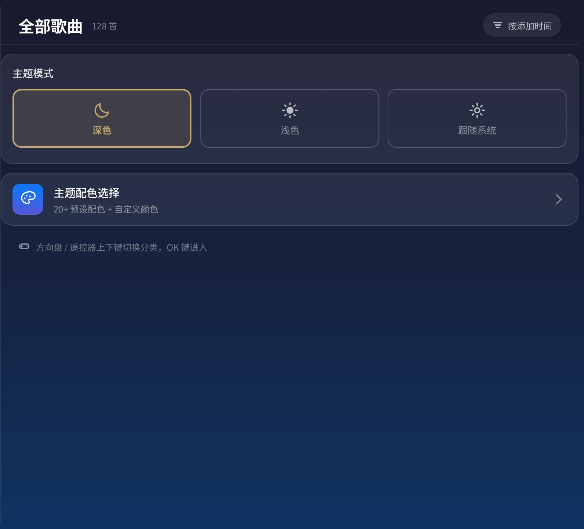
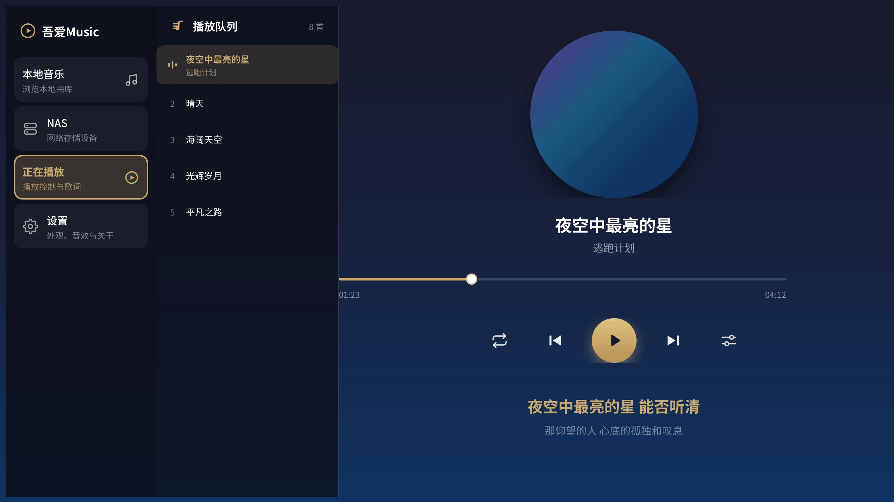

吾爱Music 车机版
吾爱Music 车机版看得清，点得准
车速之外的事，尽量少占用注意力。界面做减法，操作做短路径。
01
大字号高对比
歌名、歌手与时长用大字呈现，深蓝主题降低反光干扰，一眼扫过就能找到要听的歌。
02
本地播放不联网
U 盘、SD 卡与车机本地存储的曲库直接扫描入库，隧道、地库、山区没信号也照常播放。
03
宽屏三栏布局
导航常驻、队列可见，播放控制随手可及；与手机端共享歌词、封面与均衡器能力。
真实界面截图
来自车机 / 平板宽屏的真机画面。

